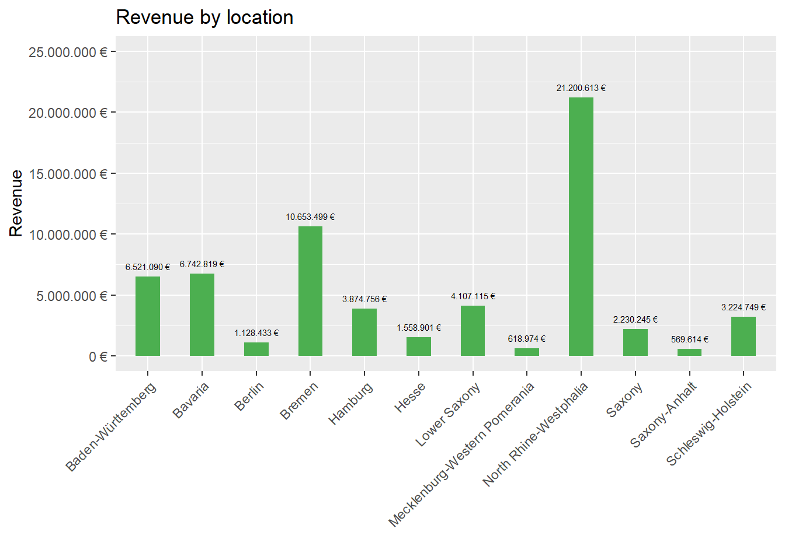

Journal (reproducible report)
Anurag Rajendraprasad Ananthapuram
2020-12-06
1 Challenge Tidyverse
Last compiled: 2020-12-02
1.1 Sales by location
# Data Science at TUHH ------------------------------------------------------
# SALES ANALYSIS ----
cat("\014") #to clear console# 1.0 Load libraries ----
library(tidyverse)
library(readxl)
# 2.0 Importing Files ----
bikes_tbl <- read_excel("00_data/01_bike_sales/01_raw_data/bikes.xlsx")
orderlines_tbl <- read_excel("00_data/01_bike_sales/01_raw_data/orderlines.xlsx")
#Not required, just for completeness
bikeshops_tbl <- read_excel("00_data/01_bike_sales/01_raw_data/bikeshops.xlsx")
# 3.0 Examining Data ----
glimpse(bikes_tbl)## Rows: 231
## Columns: 9
## $ bike.id <dbl> 2875, 2873, 2874, 2876, 2877, 2225, 2091, 2086, 2088...
## $ model <chr> "Aeroad CF SL Disc 8.0 Di2", "Aeroad CF SLX Disc 9.0...
## $ model.year <dbl> 2020, 2020, 2020, 2020, 2020, 2019, 2019, 2021, 2020...
## $ frame.material <chr> "carbon", "carbon", "carbon", "carbon", "carbon", "c...
## $ weight <dbl> 7.60, 7.27, 7.10, 7.73, 7.83, 6.80, 6.80, 7.60, 7.30...
## $ price <dbl> 4579, 6919, 6429, 5069, 3609, 6139, 5359, 2629, 3699...
## $ category <chr> "Road - Race - Aeroad", "Road - Race - Aeroad", "Roa...
## $ gender <chr> "unisex", "unisex", "unisex", "unisex", "unisex", "u...
## $ url <chr> "https://www.canyon.com/en-de/road-bikes/race-bikes/...glimpse(orderlines_tbl)## Rows: 15,644
## Columns: 7
## $ ...1 <chr> "1", "2", "3", "4", "5", "6", "7", "8", "9", "10", "11"...
## $ order.id <dbl> 1, 1, 2, 2, 3, 3, 3, 3, 3, 4, 5, 5, 5, 5, 6, 6, 6, 6, 7...
## $ order.line <dbl> 1, 2, 1, 2, 1, 2, 3, 4, 5, 1, 1, 2, 3, 4, 1, 2, 3, 4, 1...
## $ order.date <dttm> 2015-01-07, 2015-01-07, 2015-01-10, 2015-01-10, 2015-0...
## $ customer.id <dbl> 2, 2, 10, 10, 6, 6, 6, 6, 6, 22, 8, 8, 8, 8, 16, 16, 16...
## $ product.id <dbl> 2681, 2411, 2629, 2137, 2367, 1973, 2422, 2655, 2247, 2...
## $ quantity <dbl> 1, 1, 1, 1, 1, 1, 1, 1, 1, 1, 1, 2, 1, 1, 1, 1, 1, 1, 1...glimpse(bikeshops_tbl)## Rows: 30
## Columns: 5
## $ bikeshop.id <dbl> 1, 2, 3, 4, 5, 6, 7, 8, 9, 10, 11, 12, 13, 14, 15, 16, ...
## $ name <chr> "Zum Goldenen Lenker", "AlexandeRad", "Fahrradladen 16"...
## $ location <chr> "Berlin, Berlin", "Hamburg, Hamburg", "Munich, Bavaria"...
## $ lat <dbl> 52.51667, 53.57532, 48.15000, 50.93333, 50.11552, 48.78...
## $ lng <dbl> 13.400000, 10.015340, 11.583333, 6.950000, 8.684167, 9....# 4.0 Joining Data ----
bike_orderlines_joined_tbl <- orderlines_tbl %>%
left_join(bikes_tbl, by = c("product.id" = "bike.id")) %>%
left_join(bikeshops_tbl, by = c("customer.id" = "bikeshop.id"))
bike_orderlines_joined_tbl %>% glimpse()## Rows: 15,644
## Columns: 19
## $ ...1 <chr> "1", "2", "3", "4", "5", "6", "7", "8", "9", "10", "...
## $ order.id <dbl> 1, 1, 2, 2, 3, 3, 3, 3, 3, 4, 5, 5, 5, 5, 6, 6, 6, 6...
## $ order.line <dbl> 1, 2, 1, 2, 1, 2, 3, 4, 5, 1, 1, 2, 3, 4, 1, 2, 3, 4...
## $ order.date <dttm> 2015-01-07, 2015-01-07, 2015-01-10, 2015-01-10, 201...
## $ customer.id <dbl> 2, 2, 10, 10, 6, 6, 6, 6, 6, 22, 8, 8, 8, 8, 16, 16,...
## $ product.id <dbl> 2681, 2411, 2629, 2137, 2367, 1973, 2422, 2655, 2247...
## $ quantity <dbl> 1, 1, 1, 1, 1, 1, 1, 1, 1, 1, 1, 2, 1, 1, 1, 1, 1, 1...
## $ model <chr> "Spectral CF 7 WMN", "Ultimate CF SLX Disc 8.0 ETAP"...
## $ model.year <dbl> 2021, 2020, 2021, 2019, 2020, 2020, 2020, 2021, 2020...
## $ frame.material <chr> "carbon", "carbon", "carbon", "carbon", "aluminium",...
## $ weight <dbl> 13.80, 7.44, 14.06, 8.80, 11.50, 8.80, 8.20, 8.85, 1...
## $ price <dbl> 3119, 5359, 2729, 1749, 1219, 1359, 2529, 1559, 3899...
## $ category <chr> "Mountain - Trail - Spectral", "Road - Race - Ultima...
## $ gender <chr> "female", "unisex", "unisex", "unisex", "unisex", "u...
## $ url <chr> "https://www.canyon.com/en-de/mountain-bikes/trail-b...
## $ name <chr> "AlexandeRad", "AlexandeRad", "WITT-RAD", "WITT-RAD"...
## $ location <chr> "Hamburg, Hamburg", "Hamburg, Hamburg", "Bremen, Bre...
## $ lat <dbl> 53.57532, 53.57532, 53.07379, 53.07379, 48.78234, 48...
## $ lng <dbl> 10.015340, 10.015340, 8.826754, 8.826754, 9.180819, ...# 5.0 Wrangling Data ----
bike_orderlines_joined_tbl %>%
select(category) %>%
filter(str_detect(category, "^Mountain")) %>%
unique()## # A tibble: 10 x 1
## category
## <chr>
## 1 Mountain - Trail - Spectral
## 2 Mountain - Trail - Neuron
## 3 Mountain - Dirt Jump - Stitched
## 4 Mountain - Enduro - Torque
## 5 Mountain - Trail - Grand Canyon
## 6 Mountain - Cross-Country - Lux
## 7 Mountain - Enduro - Strive
## 8 Mountain - Downhill - Sender
## 9 Mountain - Fat Bikes - Dude
## 10 Mountain - Cross-Country - Exceedbike_orderlines_wrangled_tbl <- bike_orderlines_joined_tbl %>%
separate(col = category,
into = c("category.1", "category.2", "category.3"),
sep = " - ") %>%
mutate(total.price = price * quantity) %>%
select(-...1, -gender) %>%
select(-ends_with(".id")) %>%
bind_cols(bike_orderlines_joined_tbl %>% select(order.id)) %>%
select(order.id, contains("order"), contains("model"), contains("category"),
price, quantity, total.price,
everything()) %>%
rename(bikeshop = name) %>%
set_names(names(.) %>% str_replace_all("\\.", "_"))
# 6.1 Sales by location ----
# Step 1 - Manipulate
sales_by_location_tbl <- bike_orderlines_wrangled_tbl %>%
select(location, total_price) %>%
separate(col = location,
into = c("city", "state"),
sep = ",",
convert = T) %>%
group_by(state) %>%
summarize(sales = sum(total_price)) %>%
mutate(sales_text = scales::dollar(sales, big.mark = ".",
decimal.mark = ",",
prefix = "",
suffix = " €"))
# Step 2 - Visualize
sales_by_location_tbl %>%
ggplot(aes(x = state, y = sales)) +
geom_col(fill = "#4caf50",width = .45) +
geom_text(aes(label = sales_text), size = 2,vjust = -1, hjust = 0.5) +
geom_smooth(method = "lm", se = FALSE) +
scale_y_continuous(labels = scales::dollar_format(big.mark = ".",
decimal.mark = ",",
prefix = "",
suffix = " €")) +
theme(axis.text.x = element_text(angle = 45, hjust = 1))+
expand_limits(y = 2.5e7)+
labs(
title = "Revenue by location",
x = "",
y = "Revenue"
)
1.2 Sales by location and year
# Data Science at TUHH ------------------------------------------------------
# SALES ANALYSIS ----
cat("\014") #to clear console# 1.0 Load libraries ----
library(tidyverse)
library(readxl)
# 2.0 Importing Files ----
bikes_tbl <- read_excel("00_data/01_bike_sales/01_raw_data/bikes.xlsx")
orderlines_tbl <- read_excel("00_data/01_bike_sales/01_raw_data/orderlines.xlsx")
#Not required, just for completeness
bikeshops_tbl <- read_excel("00_data/01_bike_sales/01_raw_data/bikeshops.xlsx")
# 3.0 Examining Data ----
glimpse(bikes_tbl)## Rows: 231
## Columns: 9
## $ bike.id <dbl> 2875, 2873, 2874, 2876, 2877, 2225, 2091, 2086, 2088...
## $ model <chr> "Aeroad CF SL Disc 8.0 Di2", "Aeroad CF SLX Disc 9.0...
## $ model.year <dbl> 2020, 2020, 2020, 2020, 2020, 2019, 2019, 2021, 2020...
## $ frame.material <chr> "carbon", "carbon", "carbon", "carbon", "carbon", "c...
## $ weight <dbl> 7.60, 7.27, 7.10, 7.73, 7.83, 6.80, 6.80, 7.60, 7.30...
## $ price <dbl> 4579, 6919, 6429, 5069, 3609, 6139, 5359, 2629, 3699...
## $ category <chr> "Road - Race - Aeroad", "Road - Race - Aeroad", "Roa...
## $ gender <chr> "unisex", "unisex", "unisex", "unisex", "unisex", "u...
## $ url <chr> "https://www.canyon.com/en-de/road-bikes/race-bikes/...glimpse(orderlines_tbl)## Rows: 15,644
## Columns: 7
## $ ...1 <chr> "1", "2", "3", "4", "5", "6", "7", "8", "9", "10", "11"...
## $ order.id <dbl> 1, 1, 2, 2, 3, 3, 3, 3, 3, 4, 5, 5, 5, 5, 6, 6, 6, 6, 7...
## $ order.line <dbl> 1, 2, 1, 2, 1, 2, 3, 4, 5, 1, 1, 2, 3, 4, 1, 2, 3, 4, 1...
## $ order.date <dttm> 2015-01-07, 2015-01-07, 2015-01-10, 2015-01-10, 2015-0...
## $ customer.id <dbl> 2, 2, 10, 10, 6, 6, 6, 6, 6, 22, 8, 8, 8, 8, 16, 16, 16...
## $ product.id <dbl> 2681, 2411, 2629, 2137, 2367, 1973, 2422, 2655, 2247, 2...
## $ quantity <dbl> 1, 1, 1, 1, 1, 1, 1, 1, 1, 1, 1, 2, 1, 1, 1, 1, 1, 1, 1...glimpse(bikeshops_tbl)## Rows: 30
## Columns: 5
## $ bikeshop.id <dbl> 1, 2, 3, 4, 5, 6, 7, 8, 9, 10, 11, 12, 13, 14, 15, 16, ...
## $ name <chr> "Zum Goldenen Lenker", "AlexandeRad", "Fahrradladen 16"...
## $ location <chr> "Berlin, Berlin", "Hamburg, Hamburg", "Munich, Bavaria"...
## $ lat <dbl> 52.51667, 53.57532, 48.15000, 50.93333, 50.11552, 48.78...
## $ lng <dbl> 13.400000, 10.015340, 11.583333, 6.950000, 8.684167, 9....# 4.0 Joining Data ----
bike_orderlines_joined_tbl <- orderlines_tbl %>%
left_join(bikes_tbl, by = c("product.id" = "bike.id")) %>%
left_join(bikeshops_tbl, by = c("customer.id" = "bikeshop.id"))
bike_orderlines_joined_tbl %>% glimpse()## Rows: 15,644
## Columns: 19
## $ ...1 <chr> "1", "2", "3", "4", "5", "6", "7", "8", "9", "10", "...
## $ order.id <dbl> 1, 1, 2, 2, 3, 3, 3, 3, 3, 4, 5, 5, 5, 5, 6, 6, 6, 6...
## $ order.line <dbl> 1, 2, 1, 2, 1, 2, 3, 4, 5, 1, 1, 2, 3, 4, 1, 2, 3, 4...
## $ order.date <dttm> 2015-01-07, 2015-01-07, 2015-01-10, 2015-01-10, 201...
## $ customer.id <dbl> 2, 2, 10, 10, 6, 6, 6, 6, 6, 22, 8, 8, 8, 8, 16, 16,...
## $ product.id <dbl> 2681, 2411, 2629, 2137, 2367, 1973, 2422, 2655, 2247...
## $ quantity <dbl> 1, 1, 1, 1, 1, 1, 1, 1, 1, 1, 1, 2, 1, 1, 1, 1, 1, 1...
## $ model <chr> "Spectral CF 7 WMN", "Ultimate CF SLX Disc 8.0 ETAP"...
## $ model.year <dbl> 2021, 2020, 2021, 2019, 2020, 2020, 2020, 2021, 2020...
## $ frame.material <chr> "carbon", "carbon", "carbon", "carbon", "aluminium",...
## $ weight <dbl> 13.80, 7.44, 14.06, 8.80, 11.50, 8.80, 8.20, 8.85, 1...
## $ price <dbl> 3119, 5359, 2729, 1749, 1219, 1359, 2529, 1559, 3899...
## $ category <chr> "Mountain - Trail - Spectral", "Road - Race - Ultima...
## $ gender <chr> "female", "unisex", "unisex", "unisex", "unisex", "u...
## $ url <chr> "https://www.canyon.com/en-de/mountain-bikes/trail-b...
## $ name <chr> "AlexandeRad", "AlexandeRad", "WITT-RAD", "WITT-RAD"...
## $ location <chr> "Hamburg, Hamburg", "Hamburg, Hamburg", "Bremen, Bre...
## $ lat <dbl> 53.57532, 53.57532, 53.07379, 53.07379, 48.78234, 48...
## $ lng <dbl> 10.015340, 10.015340, 8.826754, 8.826754, 9.180819, ...# 5.0 Wrangling Data ----
bike_orderlines_joined_tbl %>%
select(category) %>%
filter(str_detect(category, "^Mountain")) %>%
unique()## # A tibble: 10 x 1
## category
## <chr>
## 1 Mountain - Trail - Spectral
## 2 Mountain - Trail - Neuron
## 3 Mountain - Dirt Jump - Stitched
## 4 Mountain - Enduro - Torque
## 5 Mountain - Trail - Grand Canyon
## 6 Mountain - Cross-Country - Lux
## 7 Mountain - Enduro - Strive
## 8 Mountain - Downhill - Sender
## 9 Mountain - Fat Bikes - Dude
## 10 Mountain - Cross-Country - Exceedbike_orderlines_wrangled_tbl <- bike_orderlines_joined_tbl %>%
separate(col = category,
into = c("category.1", "category.2", "category.3"),
sep = " - ") %>%
mutate(total.price = price * quantity) %>%
select(-...1, -gender) %>%
select(-ends_with(".id")) %>%
bind_cols(bike_orderlines_joined_tbl %>% select(order.id)) %>%
select(order.id, contains("order"), contains("model"), contains("category"),
price, quantity, total.price,
everything()) %>%
rename(bikeshop = name) %>%
set_names(names(.) %>% str_replace_all("\\.", "_"))
# 6.1 Sales by location and year ----
# Step 1 - Manipulate
library(lubridate)
sales_by_year_location_tbl <- bike_orderlines_wrangled_tbl %>%
select(order_date, location, total_price, ) %>%
mutate(year = year(order_date)) %>%
separate(col = location,
into = c("city", "state"),
sep = ",",
convert = T) %>%
group_by(state, year) %>%
summarize(sales = sum(total_price)) %>%
ungroup() %>%
mutate(sales_text = scales::dollar(sales, big.mark = ".",
decimal.mark = ",",
prefix = "",
suffix = " €"))
# Step 2 - Visualize
sales_by_year_location_tbl %>%
# Set up x, y, fill
ggplot(aes(x = year, y = sales, fill = state)) +
# Geometries
geom_col() + # Run up to here to get a stacked bar plot
# Facet
facet_wrap(~ state) +
#geom_smooth(method = "lm", se = FALSE)+
scale_y_continuous(labels = scales::dollar_format(big.mark = ".",
decimal.mark = ",",
prefix = "",
suffix = " €")) +
labs(
title = "Revenue by year and location",
fill = "Main category" # Changes the legend name
)
2 Challenge Data Aquisition
2.1 Indian Premier League (IPL)
cat("\014")# WEBSCRAPING ----
# 1.0 LIBRARIES ----
library(tidyverse) # Main Package - Loads dplyr, purrr, etc.
library(rvest) # HTML Hacking & Web Scraping
library(xopen) # Quickly opening URLs
library(jsonlite) # converts JSON files to R objects
library(glue) # concatenate strings
library(stringi) # character string/text processing
library(httr) #GET() function
library(knitr)
# 1.1 COLLECT PRODUCT FAMILIES ----
url <- "https://www.iplt20.com/points-table/2020"
# Read in the HTML for the entire webpage
html <- url %>%
read_html()
team <- html %>%
html_nodes(".standings-table__team.standings-table__freeze > a") %>%
html_text() %>%
stringr::str_extract("(?=)[:alpha:]+.*" ) %>%
enframe(name = "list5", value = "team")
RR <- html %>%
html_nodes("td") %>%
html_text() %>%
enframe(name = "list", value = "Net RR") %>%
slice(8,20,32,44,56,68,80,92)
position <- html %>%
html_nodes(".standings-table__freeze.u-text-center") %>%
html_text() %>%
enframe(name = "list1", value = "position")
team_url <- html %>%
html_nodes(".standings-table__freeze > a") %>%
html_attr('href') %>%
enframe(name = "list2", value = "subdirectory") %>%
# Add the domain, because we will get only the subdirectories
mutate(
url = glue("https://www.iplt20.com{subdirectory}"))
points <- html %>%
html_nodes(".js-points") %>%
html_text() %>%
as.numeric() %>%
enframe(name = "list3", value = "points")
played <- html %>%
html_nodes(".standings-table__padded") %>%
html_text()%>%
enframe(name = "list4", value = "played") %>%
slice(2:9)
data <- html %>%
html_nodes(".standings-table__optional") %>%
html_text()
data_1_tbl <- tibble(data) %>%
slice(7:12)
data_1_row <- as.data.frame(t(data_1_tbl))
data_2_tbl <- tibble(data) %>%
slice(15:20)
data_2_row <- as.data.frame(t(data_2_tbl))
data_3_tbl <- tibble(data) %>%
slice(23:28)
data_3_row <- as.data.frame(t(data_3_tbl))
data_4_tbl <- tibble(data) %>%
slice(31:36)
data_4_row <- as.data.frame(t(data_4_tbl))
data_5_tbl <- tibble(data) %>%
slice(39:44)
data_5_row <- as.data.frame(t(data_5_tbl))
data_6_tbl <- tibble(data) %>%
slice(47:52)
data_6_row <- as.data.frame(t(data_6_tbl))
data_7_tbl <- tibble(data) %>%
slice(55:60)
data_7_row <- as.data.frame(t(data_7_tbl))
data_8_tbl <- tibble(data) %>%
slice(63:68)
data_8_row <- as.data.frame(t(data_8_tbl))
full_data <- data_1_row %>%
bind_rows(data_2_row,data_3_row,data_4_row,data_5_row,data_6_row,data_7_row,data_8_row) %>%
set_names(c("Won","Lost","Tied","N/R","For","Against"))
points_tbl <- tibble(position,team,played,full_data,RR,points,team_url) %>%
select(position,team,played,Won,Lost,Tied,'N/R','Net RR',For,Against,points,url)
kable(points_tbl, caption = "IPL 2020 Points Table")| position | team | played | Won | Lost | Tied | N/R | Net RR | For | Against | points | url |
|---|---|---|---|---|---|---|---|---|---|---|---|
| Q | Mumbai Indians | 14 | 9 | 5 | 0 | 0 | +1.107 | 2,378/262.2 | 2,187/274.5 | 18 | https://www.iplt20.com/teams/mumbai-indians |
| Q | Delhi Capitals | 14 | 8 | 6 | 0 | 0 | -0.109 | 2,289/278.5 | 2,271/273 | 16 | https://www.iplt20.com/teams/delhi-capitals |
| Q | Sunrisers Hyderabad | 14 | 7 | 7 | 0 | 0 | +0.608 | 2,225/269.3 | 2,125/277.5 | 14 | https://www.iplt20.com/teams/sunrisers-hyderabad |
| Q | Royal Challengers Bangalore | 14 | 7 | 7 | 0 | 0 | -0.172 | 2,147/272.2 | 2,183/271 | 14 | https://www.iplt20.com/teams/royal-challengers-bangalore |
| 5 | Kolkata Knight Riders | 14 | 7 | 7 | 0 | 0 | -0.214 | 2,219/278 | 2,206/269.1 | 14 | https://www.iplt20.com/teams/kolkata-knight-riders |
| 6 | Kings XI Punjab | 14 | 6 | 8 | 0 | 0 | -0.162 | 2,335/277.5 | 2,343/273.3 | 12 | https://www.iplt20.com/teams/kings-xi-punjab |
| 7 | Chennai Super Kings | 14 | 6 | 8 | 0 | 0 | -0.455 | 2,191/274.3 | 2,275/269.4 | 12 | https://www.iplt20.com/teams/chennai-super-kings |
| 8 | Rajasthan Royals | 14 | 6 | 8 | 0 | 0 | -0.569 | 2,288/272.4 | 2,482/277 | 12 | https://www.iplt20.com/teams/rajasthan-royals |